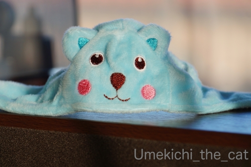
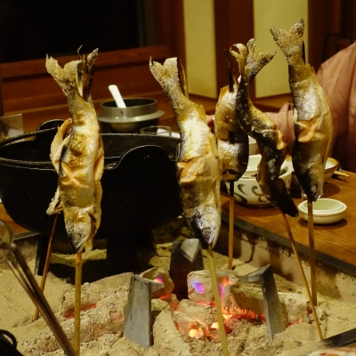

今年の干支になったねこ [梅吉]


年末わたわたしながら買い物をしていた時に見かけたこの被り物。
色と形から「ねずみんさんだ！」と思い込んで買ったのですが
家でよく見たらクマさんだった(⌒-⌒;
クマさんにこの色使うー！？と毒づきながら少々手を加えてみた。

家にあった白い布を切って歯にみたててボンドでぺたり。
我ながら雑な仕事だと思っていたら案の定おっとに「歯がかわいくない」と言われました(ｰ ｰ;)
剥がそうにもがっちりくっついているのでこのまま続行w

とりあえずクマさんではなくなりましたよね！
・・・・・そう思ってやってくださいm(_ _)m
【追記】
年明け早々発熱して辛そうなおっと。
今朝休日救急病院に行ったのですがインフルエンザ検査は陰性。
でも！！夜になって39℃の熱。
これ絶対インフルエンザですよねぇ。
もうゾフルーザなど早期治療薬が効く時期は過ぎてしまったと思われます。
あとは寝て治すしかないなw
そしてきっと私にも♪来る〜、きっと来る〜♪
私の免疫力とインフルエンザウィルスの勝負、いざっ！！
次回のブログ更新がなかったら「やられた」と思ってくださいwww
年末30日、色々なお祝いが重なっていたので兄夫婦とともに両親を温泉に招待しました。
北海道、支笏湖畔にある丸駒温泉。
ここの最大の売りは部屋から見えるレイクビュー！
夕方で薄暗くなり始めた頃に撮ったせいもありますが天気が悪くて眺めが良くなーい！
そうなんです。30日頃から年明けにかけて北海道は天気が悪かった。
飛行機が飛ばないんじゃないか、31日に大阪に帰ってこられないんじゃないか
とヒヤヒヤしましたが大きなトラブルはなく無事に帰宅。
この時期に海を渡る移動は天気に神経を尖らせちゃいます。
が宿はしっかり堪能してきましたよ＾＾
（私は入らなかったのですが）
ここには面白い天然露天風呂があります。
こんな階段を下がっていくと
湖と同じ水位の天然露天風呂。
向こう側が湖、手前が天然露天風呂になります。
水位は季節、天候、時間によって変わるんですよ。
おっとがはいった時は腰くらいまであったんだそう。
水かさが増す時は160センチ近くにまでなるそうで
そういう時は立ったまま温泉に浸かることになりますwおもしろいでしょ＾＾

お夕食は品数もたくさん量もたくさんで・・・
温泉でも美味しいものを少しだけみたいなプランがあれば良いのにー。
こんなにたくさんのお料理完食できる人なんてそうそういませんよね。

お夕食、囲炉裏端プラン（だったかな）の一番のメインはチップの塩焼き！
串に刺して焼いたものが出て来て炭火で再加熱していただきます。
全員分刺して「映え」を狙ってみた。
ちなみに「チップ」はアイヌ語で「ヒメマス」のこと。
支笏湖で獲れるんですよ。
このチップのためにかなりセーブしながら食べていましたが一尾食べ切れませんでした；；
私今、腹八分目の女だしね・・・
両親にお花贈呈！
札幌の馴染みのあるお花屋さんにブーケの手配をお願いしたら
時期、場所（丸駒温泉は札幌市内中心部から１時間半くらいかな）を理由に断られてしまって・・・
宿から聞いた千歳市内の知らないお花屋さんに作ってもらいました。
好みじゃないの作られたら嫌なのでかなーり細かく電話で希望を伝えました。
うるさい客だ〜と思われた。きっとwwwでも素敵なのを作ってもらえて大満足！！
両親も喜んでくれてました。
翌朝少し眺めが良くなった頃にパチリ。
全体的にお天気は悪かったのですが刻々と変わる空の様子は美しかったです。
霧が湖を渡ってくる様子も神秘的でした。
清算している時にフロント横に『テルマエロマエ』のヤマザキマリさんのサインを発見。
偶然にも行きの飛行機の中の機内誌で
ヤマザキさんが幼い頃千歳に住んでいたこと、お母様が丸駒温泉のファンであること
学校を休んで丸駒温泉に行った事が良くあったと書かれた記事を読んでました。
ご本人、現在もちょくちょく訪れてらっしゃるようでこのサインは2019年のものでしたよ。
（他の時期に書いたサインもあった）
あの名作（笑）テルマエロマエの原点はここ丸駒温泉かも！？
北海道とは打って変わって良いお天気だった関西。
伊丹に降りたので大阪城がはっきり見えました。
ちゃんと梅吉のいつものお夕食時間に間に合って家に着き
家族揃って年越し＆年明けを迎えることができました＾＾

カフェオレ色の梅吉

梅吉 2023年8月10日 永眠


梅吉と出会った譲渡会

犬猫の理由なき殺処分ゼロ
妄想広告
UMEKICHI 光

爆発的に早い！
時々攻撃的！
Thanks to Mr.Boss365
爆発的に早い！
時々攻撃的！
Thanks to Mr.Boss365

いいとこに行かれましたね＆それは、梅吉くん、怒りますわな:-)
冬の北海道、いいですね～
現在、２月末の渡道を画策中です。
by tama (2020-01-02 13:35)
梅吉さん♪ネズミさんに見えます（笑
歯がポイントだったのですね♪
おぉ～冬の北海道！
親孝行出来て良かったですね(#^.^#)
by きぃ (2020-01-02 16:19)
温泉ご招待、素敵な御兄妹だ~。
そして笑ってしまいました。確かに熊ですね。
ちょっとハムスター系に見えなくもないかも。
でも歯を付けた姿はしっかりねずみに見えました^m^
by ふにゃいの (2020-01-02 19:11)
こんにちは。親孝行、涙。また来ます！？(=^･ｪ･^=)
by Boss365 (2020-01-02 19:31)
おお。お梅吉さん、ネズミ帽お似合いですネ♬
冬の北海道、寒そうだけれど、温泉は温かそう。
ご両親のために温泉＆花束、とても素晴らしいです。^^)
by yes_hama (2020-01-02 20:31)
大丈夫！ 1枚目の写真でネズミって思いましたよ！
あとねー、ヒゲがあれば完璧だったと思うの。
でも、ツンツン出るヒゲは危ないですよね。
で、旦那さん、インフル?!
いや、明日でももう一度、休日救急にもう一度行ってください!!
寝て治すって、無理ありますからーー。
年末にお出かけ、北海道とはいえ札幌じゃないとおっしゃっていたのでどこへ？と思ってましたが、ステキなお祝いですね♪ さっすがー。
160㎝近くの深さになっちゃったら、普通の人は入れないじゃないですか！
ふちに捕まって浮いてるのかしら。興味津々。
温泉宿のお料理って、ほんっと品数多くて大量ですよねぇ。
そこが楽しくもあるけどもったいないですよねぇ。
お花もステキ。うるさい注文、良いじゃないですか！お花屋さんだって、おまかせで作るのもいいだろうけれど、そういうチャレンジを受けて向かうのも、きっと楽しかったと思いますよー。
北海道1泊で慌ただしかったと思いますが、無事、行ってこられて良かったです。
by ChatBleu (2020-01-02 21:04)
熊でもネズミでも梅吉さんは何でもに合う(*^-^*)
ほんと、おかーさんに協力してくれるよいこですね！
冬の北海道はほぼスキーしか知らず・・・眺めの良い温泉宿は素敵♪
よいお祝いになりましたね。
ところで相方さん、インフル大丈夫ですか？？
以前、私も急な熱でスグに病院に行った時、検査で出ませんでした。
いつまでも治らないので再度受診したらインフルと判明。
もうウィルス増殖してしまった後でせっかくのタミフルも効果なく長引きました。再受診された方がよいかもしれません。
ちぃさんはひたすらうがいと手洗いに励んでください！！
人のインフルが猫にうつらなくてホントによかったと心から思います。
家に帰れなくなっちゃいますもんね^^;
どうぞお大事になさってください。
by ゆきち (2020-01-02 21:24)
あけましておめでとうございます＾＾
笑顔溢れる素敵な一年になりますように♪( ´▽｀)
本年もどうぞよろしくお願いいたします=(^.^)=
梅吉さんが被ってたら、しっかりねずみさんに見えますよぉ( ^ω^ )
夫さん、インフルですか(°_°)
ちぃさんにうつりませんように(_ _)
数年前、私はしっかりかみさんにうつしてがっつり怒られました(⌒-⌒; )
by ニッキー (2020-01-02 21:51)
ちゃんとネズミに見えますよー。
ちぃおっと様風邪でちぃさんもピンチですね。なんとか乗り切って下さい。
支笏湖のお写真は神秘的です。私はこういうの好きー。
by zombiekong (2020-01-03 00:20)
可愛いネズミさん！ くまさんとはわからないですよ。
生首状態の梅吉さんは～ちょっと疑ってる？＾m＾
4枚目の写真は「ネズミです！」と言い切ってる＾＾
支笏湖ですか～素敵なご旅行！
お魚を焼くいい匂いがしてきそう＾＾
花束贈呈なんて、親孝行なさいましたね～～＾＾
あら、おっとさん39度は大変！
重くなりませんように＾＾
by sana (2020-01-03 00:39)
え～、歯めっちゃかわいいですよ♪
ぜひ今年一年そのままでお願いします。
そしてお体には気をつけていただきたい・・・
ご主人が早く回復してもらわないことを願っています(^_-)-☆
そして支笏湖の丸駒温泉！
ここ昔から行ってみたい温泉であらためて素晴らしい風景です♪
大阪城上空ということは我が家の上を越えていったかも(笑)
by yamatonosuke (2020-01-03 00:56)
明けましておめでとうございます。
穏やかな新年をお迎えのことと存じます。
本年もどうぞ宜しくお願い致します。
by ネオ・アッキー (2020-01-03 05:41)
かわいいネズミさんになりましたね＾＾
by ぽちの輔 (2020-01-03 06:52)
こんにちは。
梅吉君、被り物が似合いますね（笑）
クマさん？には見えないのでネズミさんでOKです！！
口を塞いだ加工！！ナイスです（笑）愛ですね（爆）完全にネズミさんです。
インフル？大丈夫ですか？お大事にして下さい。
小生は完全防備プラス、アルコール消毒で乗り切りました。
甥っ子も若いせいか薬を飲んで３日ほどで完治してました。
本人曰く、元高校球児なので「風邪でも予選会に出場の経歴あり」と自慢？
両親を「温泉に招待」素晴らしいです（涙）
「支笏湖畔にある丸駒温泉」未知の場所？天気悪かったみたいですが・・・
良い風景ですよ。セカンドライフの為にメモりました。
水位が変化する天然露天風呂も未知の分野？泳げるので大丈夫かな（笑）
千歳市内のお花屋さん、大変だったと思いますが・・・
良い勉強になったと推測？指導した甲斐ありですね。
素晴らしい親孝行！！小生母は、今では出来ない状況なので羨ましいです。
再度、本年もよろしくでお願い申し上げマウス！？(=^･ｪ･^=)
by Boss365 (2020-01-03 12:10)
あけましておめでとう！
梅吉くんも、手作りネズミさんをびしっと決めてくれたね^^
歯、そうきたか〜！って思ったｗｗ
そっかー、丸駒温泉に行っていたんだねえ♪
お祝い事は嬉しいです！そしてブーケ、素敵だねえ。
これは喜んでくれたと思う〜〜〜
チップ、懐かしいな。久しぶりにその響きを聞いたよ^^
だんなさま。それは間違いなくインフルだと思われます^^;
ちぃさん、負けるな！！
ありとあらゆる消毒がんばってーーーー！！！
「来〜る！ きっと来る！」は、うみちゃんだけでじゅうぶんよｗｗ
by リュカ (2020-01-03 14:14)
明けましておめでとうございます。
猫とネズミ、微妙な組み合わせですが、なかなかマッチしてますね～(^^)
温泉、良いですね。こっちは年に一度実家に兄弟家族が集まって大宴会でした(^_^;)
by kou (2020-01-03 18:46)
あけましておめでとうございます。
今年もよろしくお願い致します
by (。・_・。)２ｋ (2020-01-03 19:42)
明けましておめでとうございます。
今年もよろしくお願いいたします。
by てんてん (2020-01-03 23:02)
あははは、ネズミに見えます見えます！
そしておりこうですねえ、梅吉くん。
丸駒温泉、５年前の北海道マラソンの帰り、
千歳空港へ向かう途中に回り道して日帰り入浴しました！
露天風呂も入りましたよ～
顔はひんやり、体はあったか、湖とつながってるみたいな不思議な景色、
気持ちよくて長湯しちゃいました。
次回は泊まってみたいな～。
by liang (2020-01-04 09:28)
明けましておめでとうございます。
本年も宜しくお願い致します。
ネズミさんの帽子・・・歯をつけるとネズミさんに変身ｗですね。
さすがです、それにしてもクマに水色って・・・ねぇ
支笏湖、私も行った時はグレー空に覆われた春なのに寒い日で、湖面は風に
あおられて荒れていました。
炉端でヒメマスｗなんかこの状況だけでも美味しさ倍増ですね(^^
花束贈呈♪ 喜んで頂けたようですね。
伊丹に降りるときのｎ大阪城これまで見たことなかったかもｗ
いつも日が暮れていたのかな(;^_^A
by marimo (2020-01-04 10:31)
あけましておめでとうございます♪
いや〜 リッパなねずみさんですよ!!!
リメイク前の写真がなかったら、ずっと、ねずみだと思ってたww
ご両親と支笏湖へ〜 親孝行旅行、すばらしい♡
by のらん (2020-01-04 12:21)
今年もよろしくお願いいたします。
ちゃんとネズミですね。
親孝行で喜ばれたことでしょう。
その後 旦那様の具合はいかがですか？
by サンダーソニア (2020-01-04 18:25)
夫さんお大事になさってください。
by ニコニコファイト (2020-01-05 06:42)